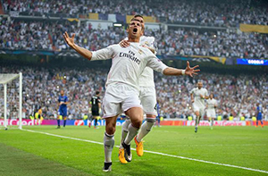
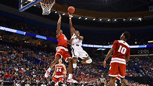

Fútbol
El fútbol o futbol (del inglés británico football),
también conocido como futbol asociación o fútbol
asociación para distinguirlo de otros deportes que
incluyen la palabra "futbol" o "fútbol" y también
como balompié, es un deporte de equipo jugado entre
dos conjuntos de once jugadores cada uno y algunos
árbitros que se ocupan de que las normas se cumplan
correctamente. Es ampliamente considerado el deporte
más popular del mundo, pues lo practican unas 270
millones de personas. El terreno de juego es rectangular
de césped natural o artificial, con una portería o arco
a cada lado del campo. Se juega mediante una pelota que
se debe desplazar a través del campo con cualquier parte
del cuerpo que no sean los brazos o las manos, y
mayoritariamente con los pies (de ahí su nombre).
El objetivo es introducirla dentro de la portería
o arco contrario, acción que se denomina marcar
un gol. El equipo que logre más goles al cabo del
partido, de una duración de 90 minutos, es el que
resulta ganador del encuentro.

Baloncesto
El baloncesto, basquetbol o básquetbol (del inglés
basketball; de basket, 'canasta', y ball, 'pelota'),
o simplemente básquet, es un deporte de dos equipos,
formados por cinco jugadores cada uno, ellos tienen
que intentar anotar puntos, también llamados canastas
o dobles y/o triples introduciendo un balón en un aro
colocado a 3,05 metros del suelo del que cuelga una red,
lo que le da un aspecto de cesta o canasta. Las
federaciones nacionales de los países hispanohablantes
del Caribe y Centroamérica, Guatemala, y Guinea Ecuatorial,
lo denominan baloncesto. Las federaciones nacionales de
los demás países de América del Sur/sudamericanos de habla
hispana lo denominan básquetbol. La Asociación panamericana
(FIBA) utiliza en español la denominación baloncesto,
mientras que la Asociación sudamericana (ABASU) utiliza
la denominación básquetbol. También es llamado basquetbol
o básquet, sobre todo en Guatemala, Argentina y Perú, por
la castellanización de su nombre original en inglés:
basketball.